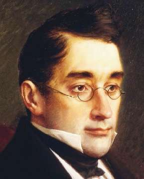
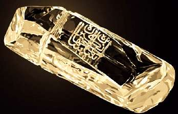

Борис Акунин
Мой календарь
Сегодня годовщина грустного события. В этот февральский день 1829 года толпа фанатиков штурмовала в Тегеране российское посольство, растерзала 38 человек и в том числе всем нам дорогого Александра Грибоедова.
Александр Сергеевич мне всегда очень нравился. И тонкими чертами лица, и красивой женитьбой, и своим милым вальсом, и пьесой «Горе от ума», которую я, по счастью, прочитал раньше, чем нас ею мучили в школе. Потому и прочитал, что находился под впечатлением этой незаурядной судьбы.
Персы потом, как говорится, страшно извинялись. В качестве компенсации за убийство посланника Грибоедова преподнесли Николаю Первому бесценный 88-каратный алмаз «Шах» безукоризненной чистоты.
Царь полюбовался чудом природы и согласился предать «вечному забвению злополучное тегеранское происшествие».
Мы, конечно, забвению предать его не можем.
Но вот что я думаю: красивый человек красив и в смерти. И даже после смерти.
Что осталось от Александра Сергеевича Грибоедова, жившего 200 лет назад?
Великая пьеса, хороший вальс и безукоризненной чистоты алмаз. Плохо ли?